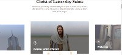

PARC: Proximity
PARC: Alignment
The Church of Jesus Christ of Latter Day Saints
Come Unto CHristThis website is designed to welcome new friends who woulld like to knnow more about the Church. The website adopts the design principle of alignment.
The title welcome message and the subtitle are both aligned vertically making it easier for visitors to know what the site is about
The picttures are aligned horizontally, keeping the site organised and clean
